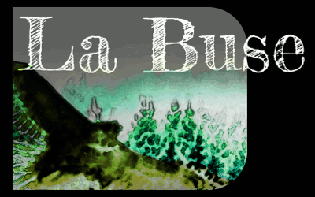

[]
Cochet, Lanier, Doussot… Où sont passés les grands théoriciens des techniques sylvicoles ? N’y aurait-il plus rien à dire, sauf à renommer sous le sceau de la protection de la planète des concepts depuis longtemps connus ? “Les arbres communiquent et collaborent entre eux”. Soit, les notions d'éducation, d'accompagnement datent bien d’un siècle. “Comprendre la nature qui fait bien les choses” , oui, Vauban nous l’a expliqué, PROSYLVA l’a redéveloppé il y a 30 ans. “Diversité, biodiversité…", sans aucun doute: depuis le moyen-âge, nos forêts n’ont jamais été aussi libre d’évoluer à leur guise, les vieux arbres aussi nombreux, le bois mort - essentiel à un grand nombre d’espèces - aussi abondant, et la tendance se poursuit 1. Mais attention, nous parlons de forêts, objet d’étude de la sylviculture, et non de champs d’arbre, qui relèvent de la ligniculture. Pour autant, ces forêts souffrent et subissent les effets des changements climatiques et plus généralement des changements globaux: arrivées de nouveaux parasites, modification du cortège des grands herbivores, changements d’usage… La substitution préventive massive de forêts sensibles par des champs d’essences sensées être plus résistantes aux sécheresse fait parti des risques à surveiller. Dans ce nouvel environnement, il devient urgent de questionner la sylviculture des années 1990 qui reste aujourd’hui la référence.
Il y a 30 ans, les écoles forestières étaient prisées des étudiants. Denevir forestier faisait rêver: dans la foulée du retour à la nature des années 70, ils’agissait de travailler avec la nature tel un paysan pour produire de la terre. Peu à peu, produire est devenu vénal: exploiter prend un sens esclavagiste, et la jeunesse ne veut plus travailler avec, mais aux côté de la nature, la protéger, l’observer. De ce fait, elle s’exclue de l’écosystème en pensant le préserver. Pourtant, la salade que nous mangeons a bien été produite, et de surcroît au détriment de la forêt puisqu’elle a poussé dans un champs ou un jardin dans lequel on n’a de cesse d’exclure la forêt. La vision ambiante, pour louable qu’elle soit, semble donc partielle.
La sylviculture a pour cela de passionnant qu’elle s’inscrit dans un tout. Elle doit agir en conjugant des connaissances fragmentaires et souvent incertaines issues de différentes sphères (sciences de la vie, de la terre, sciences économiques, sociales, technologies du bois, génie civil…) afin de gérer des attentes environnementales, économiques et sociétales. Quoi de moins trivial ? Pourtant, point de docteurs en sylviculture, pas plus d’ingénieurs: des gestionnaires, des manageurs, des scientifiques… La vision globale du sylviculteur semble avoir disparu, tel l’Humanisme d’Erasme, noyée sous le flot des connaissances déversées par des savants ignards2.
Presbyte dans un monde de myope, la buse plane et observe. D’aucuns diront, pour qui se pend-elle pour nous regarder d’en haut ? Que ne vient-elle mettre les mains dans le cambouis et prendre sa part d’actions ? C’est qu’une buse reste une buse. Non qu’elle soit particulièrement futée: elle a des ailes, pas des bras. Et d’un en-haut qui n’a rien de supérieur, peut-être voit-elle une réalité différente de celle d’en bas, une réalité plus englobante.
A défaut de Grands Maîtres, prenons le temps de nous poser, et essayons de nous mettre quelques instants dans la peaux de La Buse.
Indicateurs de gestion durable de la forêt française, IGN 2015 (fig. 4 et 18) ↩︎
Edgar Morin - Introduction à la pensée complexe, Paris, ESF, 1990 ↩︎